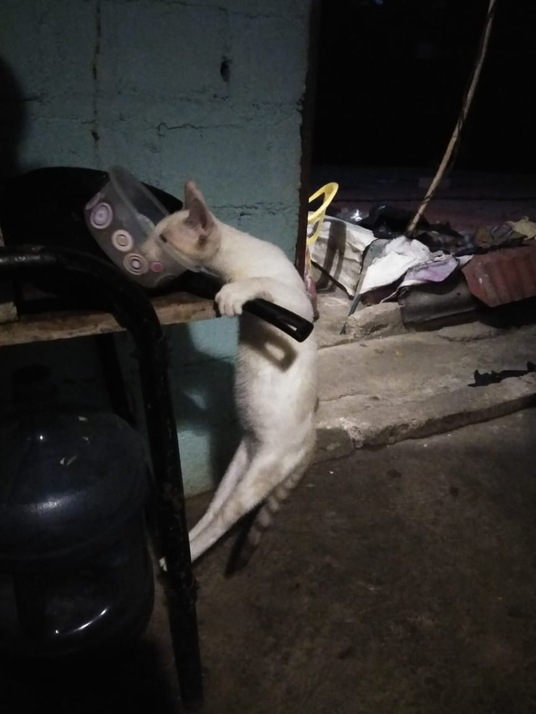

En esta Pagina encontraras los mejores gatos catalogados del mejor al no tan bueno, pordras tambien calificar sus fotos y elegir el gato que mas te guste!
Choki
Este gato es bastante risueño como travieso, le gusta comer 4 veces al dia y jugar dia y noche, es un poco enojon y no le agrada que lo toquen tanto.

Cuanto le das a este gato?
Coco
Su nombre viene de los cocos, este gato se caracteriza por ser cariñoso y juger con las personas siempre, come 3 veces al dia y es bastante tranquilo.
Cuanto le das a este gato?
Micha-segunda
Esta gata es experta en comer y dormir, su vida es bastante tranquila y no tiene preocupaciones por nada, practica el comunismo muy a menudo!
Cuanto le das a esta gata?
Micha-primera
Una gata muy reservada, no come mucho, no se sabe mucho de su vida, no se junta mucho con otros gatos y prefiere filosofar cuales son los ingredientes de sus croquetas favoritas.
Cuanto le das a esta gata?
Negra
Esta gata ah vivido ya bastante, su experiencia y su edad la han llevado a ser bastante solitaria, no juega mucho y solo busca un ambiente pacifico.
Cuanto le das a esta gata?
Bigote
Este gato tiene una historia bastante extensa, paso los primeros dias de su vida vagando, hasta que llego a un lugar donde fue acojido, desde entonces su vida cambio y se volvio mas social y jugueton.
Cuanto le das a este gato?
Confianza
Es uno de los gatos mas consentidos de todos los tiempos, su obseca forma de dormir denota su absurda confianza con el entorno. come cuantas veces pueda al dia y no le gusta nada que le toquen.
Cuanto le das a este gato?
Desconfianza
Este gato es buscado por sus multiples delitos de urto y robo a mano armada, le encanta robar comida cuando nadie lo ve y caza preferiblemente de noche.